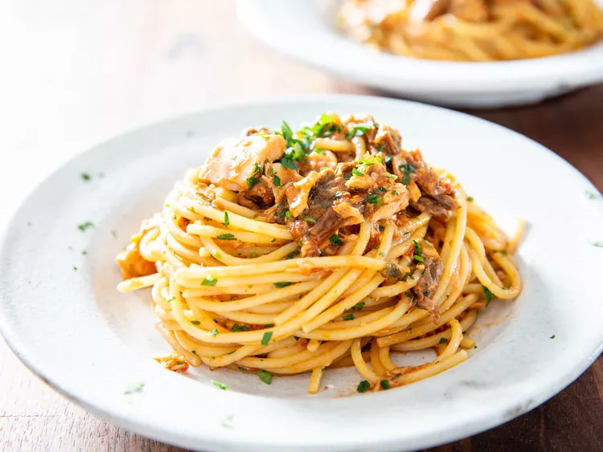

Roman Spaghetti Carretiera

Description
The roman style of spaghetti carretiera is a great staple recipe to add to your arsenal. It is a simple, umami dish that uses mostly shelf stable items you can keep in your pantry.
Ingredients
- 1 1/2 ounces (40g) dried porcini mushrooms
- 1 cup boiling water
- 1/2 cup of extra virgin olive oil, divided, plus more for finishing pasta
- 4 medium cloves of garlic, minced
- Large pinch red pepper flakes
- 1/4 cup plus 1 tablespoon finely minced fresh parseley leaves and tender stems, divided, plus more for garnish
- one 28-ounce (795g) can whole peeled tomatoes with liquid, thoroughly crushed
- one 5-ounce (140g) jar olive oil-packed tuna, preferably ventresca (tuna belly), oil reserved
- Kosher salt
- 1 pound (450g) dried spaghetti
Directions
- In a small heatproof bowl or measuring cup, soak mushrooms in boiling water until fully softened, about 20 minutes. Using a slotted spoon, remove mushrooms from soaking liquid and squeeze out excess moisture back into the bowl or measuring cup. Reserve rehydrated mushrooms and 1/4 cup (60ml) soaking liquid, making sure to dispose of any grit that has settled at the bottom.
- In a 5-quart pot, combine 1/4 cup (60ml) olive oil, garlic, pepper flakes, and 1 tablespoon minced parsley. Set over medium heat and cook, stirring frequently, until very fragrant and garlic is just beginning to turn the lightest shade of gold, about 3 minutes.
- Add mushrooms and cook, stirring, until lightly sautéed and fragrant, about 1 minute.
- Add reserved 1/4 cup (60ml) mushroom soaking liquid, tomatoes, and 2 tablespoons (30ml) reserved tuna oil (if your tuna doesn't have that much oil, just add as much as it does), and bring to a simmer. Season with salt.
- In a pot of salted, boiling water, cook spaghetti, stirring frequently, until just shy of al dente, about 1 minute less than package recommends. While spaghetti is cooking, flake tuna into pasta sauce.
- Using tongs, transfer spaghetti directly into simmering sauce along with 1/4 cup (60ml) pasta cooking water, stirring to combine. Cook, stirring, until pasta is al dente and sauce has thickened, so it coats noodles and isn't watery, about 3 minutes. Add remaining 1/4 cup minced parsley and 1/4 cup (60ml) olive oil, stirring vigorously to combine. If sauce is too thick, add more olive oil or pasta water, 1 tablespoon at a time, stirring well between additions, until desired sauce consistency is reached. Taste for seasoning, adding more salt if necessary.
- Transfer to warmed plates and sprinkle with minced parsley. Serve right away.